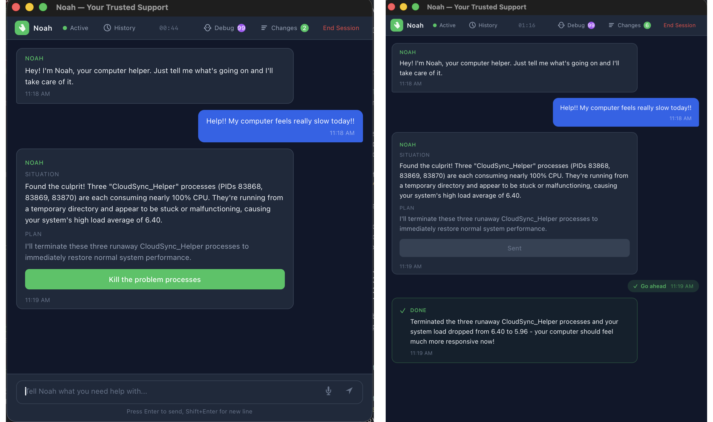

AI-powered IT support that actually fixes your computer. Diagnoses problems, explains what's wrong, and resolves issues — all in plain language.

"My internet is slow" or "A program keeps crashing" — just say it naturally.
Runs diagnostic tools, checks your system, and identifies what's wrong.
Noah explains what it wants to do and asks permission before making changes.
Every change is logged and can be undone. Noah remembers for next time.
Asks before making changes. Hard limits on dangerous operations. Every action logged.
Complete change log with one-click undo. Nothing is permanent unless you want it.
Remembers your system details and past fixes. Gets better the more you use it.
Yes. Noah is open-source (MIT license). You just need an Anthropic API key for the AI ($5/month typical usage).
Network issues, slow performance, crashing apps, printer setup, DNS configuration, disk cleanup, and more. If you'd Google it, Noah can probably fix it.
Noah asks permission before every change, logs everything, and supports undo. It has hard limits on dangerous operations like modifying boot files or security settings.
Noah runs locally. The only external communication is with the Anthropic API (Claude) for AI responses. Your system data and session history stay on your machine.